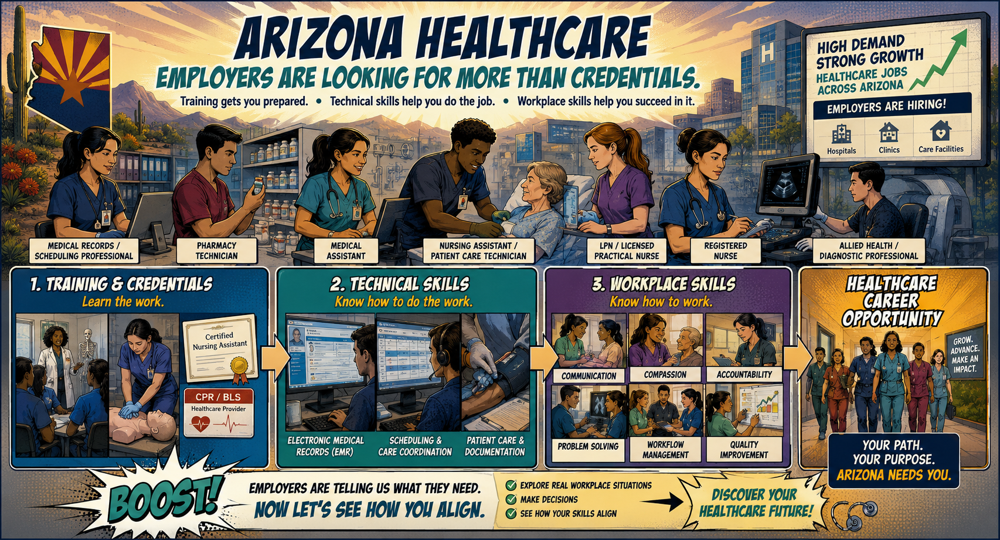

Why These Skills?
Built from recent healthcare employer demand
These scenarios emphasize skills that appeared frequently or grew in recent healthcare job postings across Pinal, Maricopa, and Pima Counties.

Optional audio explanation.
Source: Lightcast Q3 2026 • Active healthcare postings • Jun 2025–Jul 2026.
Know the Skills • Quick Match
Practice only — this does not affect your Workplace Judgment score.
Before You Begin
How well do you think Health Services fits you?
1 means not a fit. 5 means strong fit. We will ask again after the scenarios.
🎯
You know what employers value.
Now make the call.
Experience the workplace situations and choose the response you believe is strongest.
🏥
Healthcare workplace visual🏁
8 of 8 Complete
You experienced the work.
Next, add one more piece of the picture: technical skill exposure.
One More Piece of the Picture
Technical Skill Exposure
This is not a competency test. Tell us which employer-demand technical skills you've already encountered.
Electronic Medical Records / EMR
CPR / Basic Life Support
Direct Patient Care
Scheduling / Care Coordination
Now That You've Experienced the Work...
How well do these healthcare workplace situations fit you?
Reflection
What did the experience tell you?
Did the scenarios change your interest?
Could you see yourself in these environments?
What would you like to explore next?
BOOST Healthcare Workplace Skills Snapshot
ALIGNMENT SNAPSHOT
Workplace Judgment
Technical Exposure
What Changed?
What This Means
Important: This is a career-alignment learning activity, not a hiring assessment, certification exam, or determination that you are qualified to perform healthcare duties.